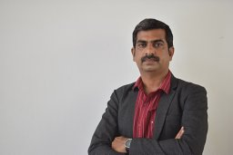
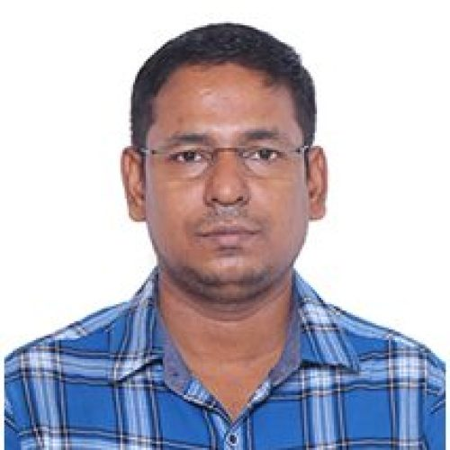
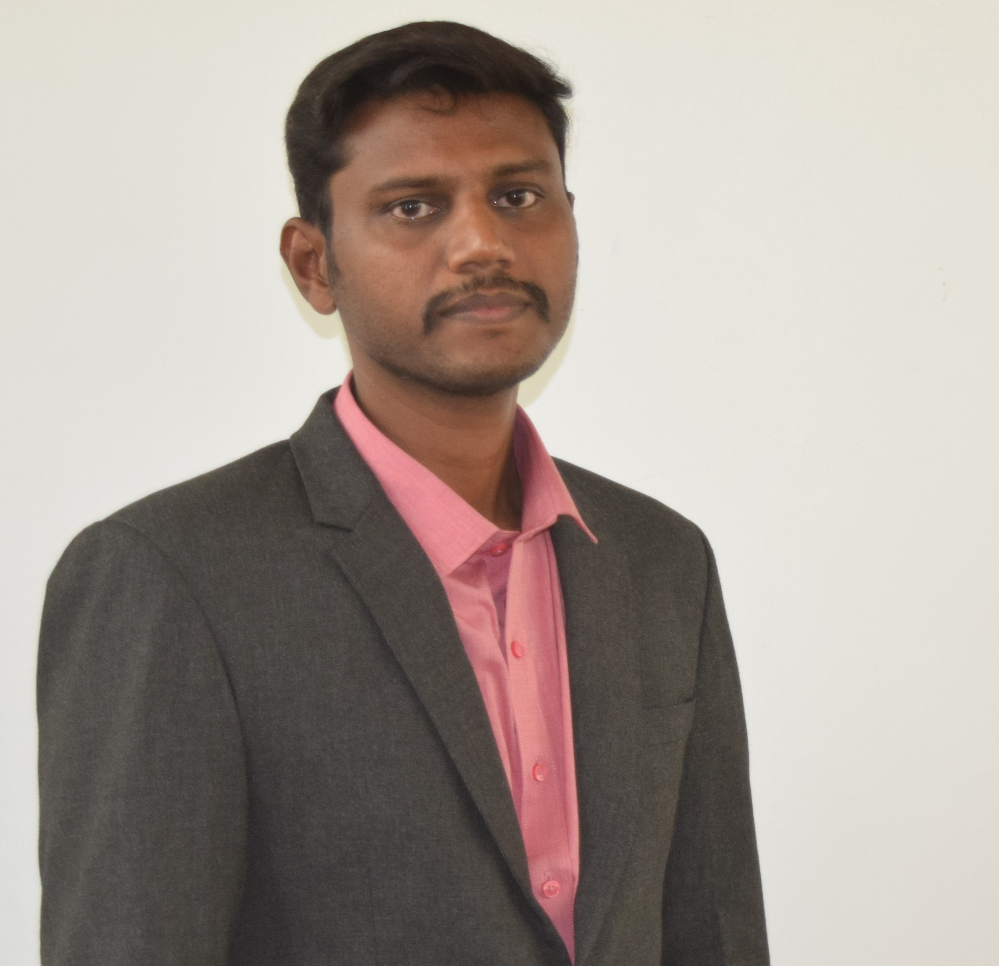
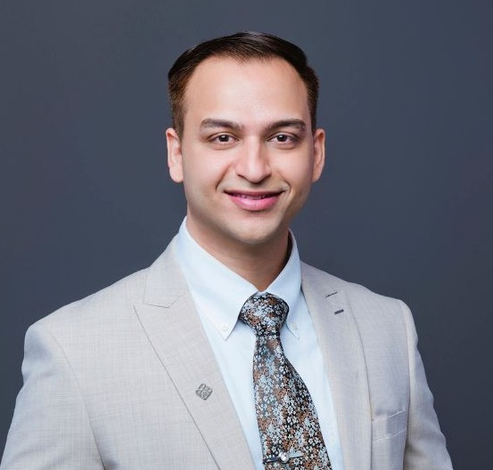
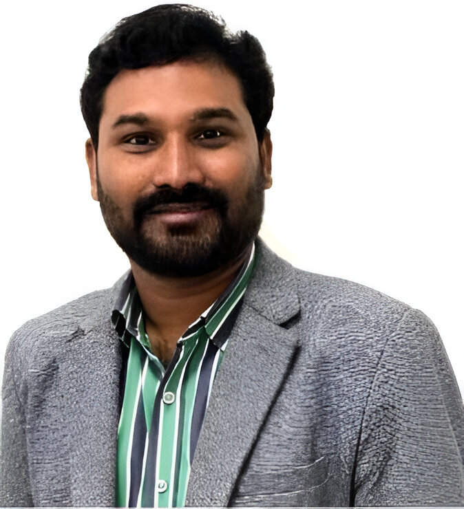

International Journal of Advanced Computing and Mechanical Systems (IJACM) Editorial Board
Dr. Bibin Jose Editor In Chief · Assistant Professor
Dept. of Mechanical Engineering, Muthoot Institute of Technology & Science (MITS)
Kochi-Madurai-Tondi Point Rd, Puthenkurish, Varikoli, Kochi, Kerala 682308 · bibinjose@mgits.ac.in

Dr. M.S. Senthil Kumar Associate Editor · Professor & Dean
Dept. of Mechanical Engineering, Excel Engineering College
NH 544, Salem - Kochi Hwy, Pallakkapalayam, Komarapalayam, Tamil Nadu 637303 · camsdean@excelcolleges.com

Dr. Anup KunduAssociate Editor · Assistant Professor
Dept. of Chemical Engineering, SSN College Of Engineering
Kalavakkam, Chennai– 603 110, Tamil Nadu, India · anupk@ssn.edu.in
Dr. M D Bharath Kumar Associate Editor · Assistant Professor
Dept. of Mechanical Engineering, Easwari Engineering College
Bharathi Salai, Ramapuram, Chennai – 600 089, Tamil Nadu, India · barathkumar.md@eec.srmrmp.edu.in

Dr. Prem Kumar M Associate Editor · Assistant Professor
Dept. of Mechanical Engineering, Kangeyam Institute of Technology
EBET Knowledge Park, Nathakadaiyur, Tamil Nadu 638108 · premkumar.mech@kitech.edu.in

Dr MOHAMMED Aquil MirzaAssociate Editor · Senior Lecturer
Dept. of Computing, Hong Kong Polytechnic University (PolyU)
Hung Hom, Kowloon, Hong Kong· aquilmirza.mohammed@polyu.edu.hk

Dr. Gunasekaran Thangavel Associate Editor · Assistant Professor
Dept. of ECE, University of Technology and Applied Sciences
Muscat 133, Oman · gunasekaran.thangavel@utas.edu.om
Institutional profile buttons lead to official university pages. Email contacts are provided for each editor.